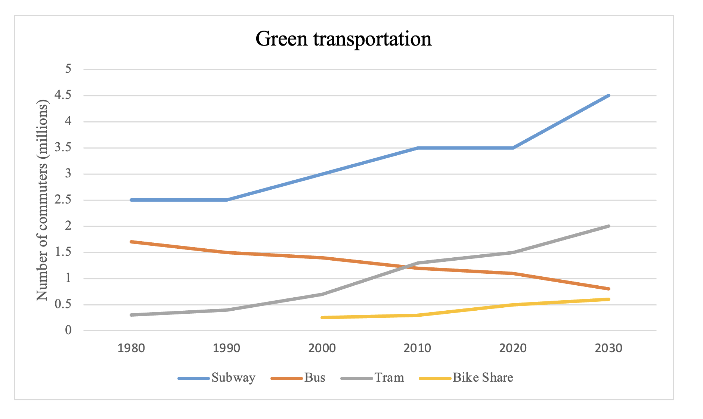

You should spend about 20 minutes on this task.
The line graph below shows the monthly ridership of four separate transportation forms in a European metropolitan area between 1980 and 2030.
Summarise the information by selecting and reporting the main features making comparisons where relevant.
Write at least 150 words.
